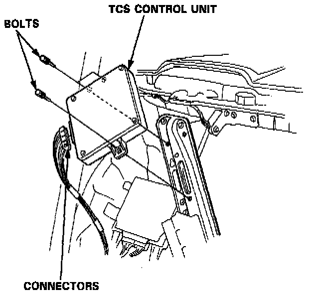

Traction Control Module: Service and Repair
1. Remove the rear seat-back.

2. Disconnect the connectors from the TCS control unit.
Remove the three bolts and the TCS control unit.
3. Install the TCS control unit in the reverse order of removal.